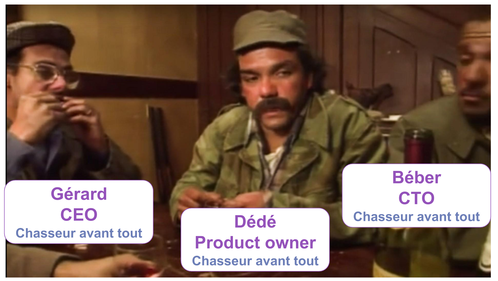
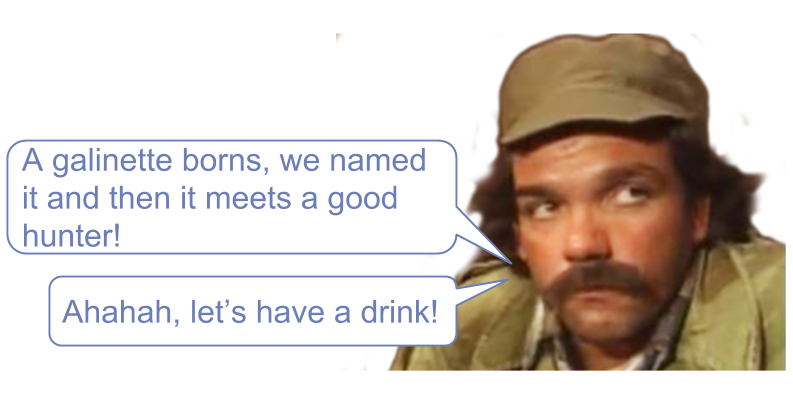
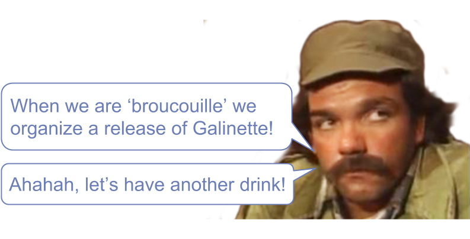

What is the difference between
good or bad repository?
Hi, I am Arnaud!
Bouchonnois Corp
What is a repository?
«A repository behaves like a in memory collection of unique domain object without taking care about the storage»
Let's model a Galinette!
Dédé, Business Expert @BouchonnoisCorp
namespace BouchonnoisCorp\Domain;
final class Galinette
{
// constructor ...
public static function born(
Identifier $identifier,
Birthday $birthday,
Gender $gender
): Galinette {
return new self($identifier, $birthday, new Name(''), $gender);
}
public function name(Name $name): void
{
$this->name = $name;
}
public function goToHeaven(): void
{
$this->goToHeavenAt = new \DateTimeImmutable('NOW');
}
}
The bad repository
namespace BouchonnoisCorp\Domain;
interface GalinetteRepository
{
public function find(int $id): Galinette
public function countGalinette(): int
public function findGalinetteForARelease(): Galinette[];
public function findGalinetteIdentifierForAReleaseAsString(): string[];
// etc ...
}
These are not repositories!
They are more SQL query repositories
The good repository
Public API
namespace BouchonnoisCorp\Domain;
interface GalinetteRepository
{
/**
* @throws \LogicException
*/
public function add(Domain\Galinette $galinette): void;
/**
* @throws UnknownGalinette | \LogicException
*/
public function get(Domain\Identifier $identifier): Domain\Galinette;
/**
* @throws \LogicException
*/
public function remove(Domain\Identifier $identifier): void;
/**
* @throws \LogicException
*/
public function nextIdentity(): Domain\Identifier;
}
Let's use doctrine to design it
Repository dependencies
namespace BouchonnoisCorp\Infrastructure\Storage\Doctrine;
use BouchonnoisCorp\Domain\GalinetteRepository;
final class GalinetteRepository implements GalinetteRepository
{
private $entityManager;
public function __construct(EntityManagerInterface $entityManager)
{
$this->entityManager = $entityManager;
}
// ...
}
Add a galinette
namespace BouchonnoisCorp\Infrastructure\Storage\Doctrine;
final class GalinetteRepository implements GalinetteRepository
{
// ...
public function add(Domain\Galinette $galinette)
{
try {
$this->entityManager->persist($galinette);
$this->entityManager->flush($galinette);
} catch (ORMInvalidArgumentException | ORMException $e) {
throw new \LogicException('It is not possible to add this galinette');
}
}
// ...
}
Retrieve a galinette
namespace BouchonnoisCorp\Infrastructure\Storage\Doctrine;
final class GalinetteRepository implements GalinetteRepository
{
// ...
public function get(Domain\Identifier $identifier): Domain\Galinette
{
try {
$galinette = $this->entityManager->find(Galinette::class, $identifier);
} catch (ORMInvalidArgumentException | ORMException $e) {
throw new \LogicException('It is not possible to add this galinette');
} finally {
if (null === $galinette) {
throw new Exception\UnknownGalinette(
(string) $identifier,
Galinette::class
);
}
return $galinette;
}
}
// ...
}
Remove a galinette
namespace BouchonnoisCorp\Infrastructure\Storage\Doctrine;
final class GalinetteRepository implements GalinetteRepository
{
// ...
public function remove(Domain\Identifier $identifier)
{
try {
$galinette = $this->entityManager->getReference(
Domain\Galinette::class,
(string) $identifier
);
$this->entityManager->remove($galinette);
$this->entityManager->flush($galinette);
} catch (ORMInvalidArgumentException | ORMException $e) {
throw new \LogicException('It is not possible to remove this galinette');
}
}
// ...
}
Get the next identity
namespace BouchonnoisCorp\Infrastructure\Storage\Doctrine;
final class GalinetteRepository implements GalinetteRepository
{
// ...
public function nextIdentity(): Domain\Identifier
{
try {
return new Domain\Identifier(Uuid::uuid4()->toString());
} catch (\InvalidArgumentException $e) {
throw new \LogicException('It is not possible to build the next identity');
}
}
}
Use your repository to
get a domain object!
How to manage my SQL queries?
What is a Query function?
«A query function is a class which represents a SQL query.»
namespace BouchonnoisCorp\Infrastructure\Storage\Doctrine\Query;
final class ReleaseOfGalinette
{
private $connection;
public function __construct(Connection $connection)
{
$this->connection = $connection;
}
public function findGalinettes(): array
{
$query = 'SELECT g.identifier, g.name, g.birthday FROM galinette as g'
$statement = $this->connection->query($query);
$galinettes = [];
while ($galinette = $statement->fetch()) {
$galinettes[] = new ReadModel\ReleasedGalinette(
$galinette['identifier'],
$galinette['name'],
$galinette['birthday']
);
}
return $galinettes;
}
}
namespace BouchonnoisCorp\Domain\ReadModel;
final class ReleasedGalinette
{
private $identifier;
private $name;
private $birthday;
public function __construct(
string $identifier,
string $name,
string $birthday
) {
$this->identifier = $identifier;
$this->name = $name;
$this->birthday = $birthday;
}
public function normalize(): array
{
return [
'id' => $this->identifier,
'name' => $this->name,
'birthday' => $this->birthday,
];
}
}
Code example is available on Github!
Thank you! Questions?
 arnolanglade
arnolanglade  arnolanglade
arnolanglade
https://joind.in/talk/todo